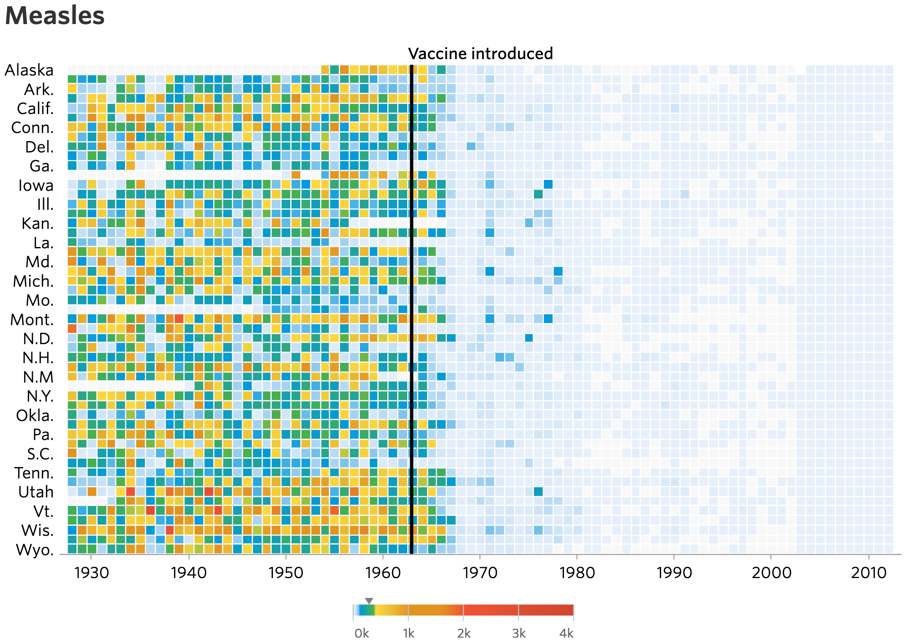
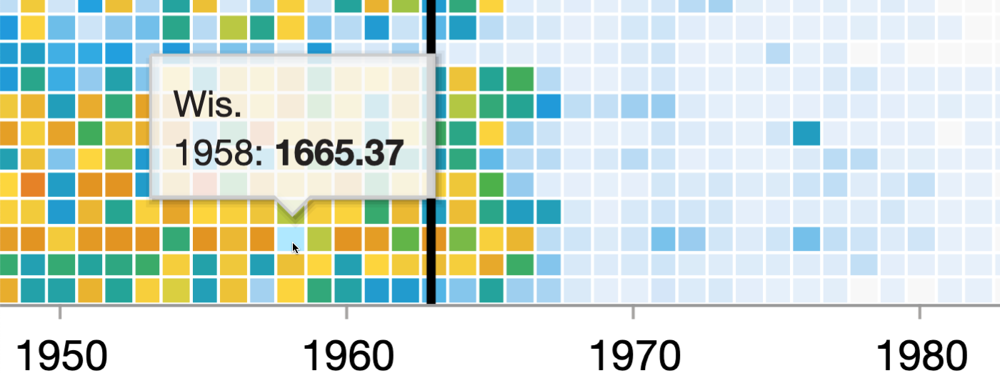

library(tidyverse)
library(knitr)
library(readxl)
library(zoo)Visualizing Measles Incidence in the USA (1928–2001)
Data Preparation
Introduction
This document contains the data engineering required to reconstruct and improve the plot by @debold_battling_2015, shown in Figure 1, depicting the measles incidence rate in the USA by state and year between 1928 and 2013.
The code below requires the following packages:

Data Cleaning
@debold_battling_2015 based their visualization on data by @panhuis_counts_2018, available in CSV format with each row representing a geographic enumeration unit, such as state or county, in a specific week. Relevant columns for data processing include:
Admin1Name: State nameAdmin1ISO: State abbreviated in the form “US-AK” (Alaska), “US-AL” (Alabama), etc.Admin2Name: Either the name of the county orNAif the enumeration unit is a state. As we are only interested in state-level data, we only retain rows whereAdmin2NameequalsNA:PeriodStartDateandPeriodEndDate: Formatted asyyyy-mm-ddPartOfCumulativeCountSeries: 0 or 1. This variable is described in the fileREADME.txt, accompanying the source data, as follows:Separate cumulative from non-cumulative time interval series. Project Tycho case count time series can be in a cumulative or fixed-interval format. Cumulative case count time series consist of overlapping case count intervals starting on the same date, but ending on different dates. Cumulative case count time series result from case reporting for “all previous weeks” instead of “the most recent week only”. An example of a cumulative case count time series is:
- time interval 1: Jan 1-Jan 7: 10 cases
- time interval 2: Jan 1-Jan 14: 15 cases
- time interval 3: Jan 1-Jan 21: 17 cases
- etc.
- time interval 1: Jan 1-Jan 7: 10 cases
- time interval 2: Jan 8-Jan 14: 7 cases
- time interval 3: Jan 15-Jan 21: 3 cases
- etc.
An inspection of the data revealed that a value of 0 refers to a fixed-interval case count and 1 to a cumulative case count.
CountValue: The number of cases in the enumeration unit in the given week. IfPartOfCumulativeCountSeriesequals 0, the value represents the new number of cases. Otherwise, the value represents the cumulative number of cases for the given year.
measles <-
"US.14189004.csv" |>
read_csv() |>
filter(is.na(Admin2Name), PartOfCumulativeCountSeries == 0) |>
select(Admin1Name, Admin1ISO, PeriodStartDate, PeriodEndDate, CountValue)
measles# A tibble: 113,691 × 5
Admin1Name Admin1ISO PeriodStartDate PeriodEndDate CountValue
<chr> <chr> <date> <date> <dbl>
1 WISCONSIN US-WI 1927-11-20 1927-11-26 85
2 WISCONSIN US-WI 1927-11-27 1927-12-03 120
3 WISCONSIN US-WI 1927-12-04 1927-12-10 84
4 WISCONSIN US-WI 1927-12-18 1927-12-24 106
5 WISCONSIN US-WI 1927-12-25 1927-12-31 39
6 WISCONSIN US-WI 1928-01-01 1928-01-07 45
7 WISCONSIN US-WI 1928-01-08 1928-01-14 28
8 WISCONSIN US-WI 1928-01-15 1928-01-21 140
9 WISCONSIN US-WI 1928-01-22 1928-01-28 48
10 WISCONSIN US-WI 1928-01-29 1928-02-04 85
# ℹ 113,681 more rowsFor further subsetting, it might seem sufficient to calculate annual incidence by considering only the cumulative count from the latest PeriodStartDate of each year. However, as pointed out by @allison_how_2015, the source data has missing weeks, treated as zero in the cumulative counts, potentially underestimating the annual total. Instead, we will calculate the weekly mean from non-missing fixed-interval case counts for each year.
The following output confirms that the end date consistently occurs 6 days after the start date:
periods_in_days <-
measles |>
mutate(PeriodLength = PeriodEndDate - PeriodStartDate) |>
distinct(PeriodLength) |>
pull()
all(periods_in_days == 6)[1] TRUETherefore, we can calculate the mean weekly case count for each state and year, using the year() function from the lubridate package, as follows:
measles <-
measles |>
mutate(year = year(PeriodStartDate)) |>
summarize(
mean_weekly_count = mean(CountValue, na.rm = TRUE),
.by = c(Admin1Name, Admin1ISO, year)
)
measles# A tibble: 3,352 × 4
Admin1Name Admin1ISO year mean_weekly_count
<chr> <chr> <dbl> <dbl>
1 WISCONSIN US-WI 1927 86.8
2 WISCONSIN US-WI 1928 71.4
3 WISCONSIN US-WI 1929 580.
4 WISCONSIN US-WI 1930 418.
5 WISCONSIN US-WI 1931 291.
6 WISCONSIN US-WI 1932 543.
7 WISCONSIN US-WI 1933 185.
8 WISCONSIN US-WI 1934 788.
9 WISCONSIN US-WI 1935 828.
10 WISCONSIN US-WI 1936 77.3
# ℹ 3,342 more rowsNext, we need to normalize the counts by state population, tabulated by @stats_state_2023, to normalize the incidence:
census <-
"state-census-counts-2020.xlsx" |>
read_xlsx(skip = 1, n_max = 52) |>
filter(State != "United States") |>
mutate(State = str_to_upper(State))
census# A tibble: 51 × 14
State `1900` `1910` `1920` `1930` `1940` `1950` `1960` `1970` `1980` `1990`
<chr> <dbl> <dbl> <dbl> <dbl> <dbl> <dbl> <dbl> <dbl> <dbl> <dbl>
1 ALABAMA 1.83e6 2.14e6 2.35e6 2.65e6 2.83e6 3.06e6 3.27e6 3.44e6 3.89e6 4.04e6
2 ALASKA 6.36e4 6.44e4 5.50e4 5.93e4 7.25e4 1.29e5 2.26e5 3.03e5 4.02e5 5.50e5
3 ARIZONA 1.23e5 2.04e5 3.34e5 4.36e5 4.99e5 7.50e5 1.30e6 1.78e6 2.72e6 3.67e6
4 ARKANS… 1.31e6 1.57e6 1.75e6 1.85e6 1.95e6 1.91e6 1.79e6 1.92e6 2.29e6 2.35e6
5 CALIFO… 1.49e6 2.38e6 3.43e6 5.68e6 6.91e6 1.06e7 1.57e7 2.00e7 2.37e7 2.98e7
6 COLORA… 5.40e5 7.99e5 9.40e5 1.04e6 1.12e6 1.33e6 1.75e6 2.21e6 2.89e6 3.29e6
7 CONNEC… 9.08e5 1.11e6 1.38e6 1.61e6 1.71e6 2.01e6 2.54e6 3.03e6 3.11e6 3.29e6
8 DELAWA… 1.85e5 2.02e5 2.23e5 2.38e5 2.67e5 3.18e5 4.46e5 5.48e5 5.94e5 6.66e5
9 DISTRI… 2.79e5 3.31e5 4.38e5 4.87e5 6.63e5 8.02e5 7.64e5 7.57e5 6.38e5 6.07e5
10 FLORIDA 5.29e5 7.53e5 9.68e5 1.47e6 1.90e6 2.77e6 4.95e6 6.79e6 9.75e6 1.29e7
# ℹ 41 more rows
# ℹ 3 more variables: `2000` <dbl>, `2010` <dbl>, `2020` <dbl>Because the United States Census is only conducted every ten years, we need to obtain a population estimate for the remaining years. We can employ linear interpolation, as implemented by na.approx() from the zoo package:
census <-
census |>
pivot_longer(
-State,
names_to = "year",
names_transform = list(year = as.integer),
values_to = "population",
values_transform = list(population = as.numeric)
) |>
complete(State, year = min(year):max(year)) |>
mutate(population = na.approx(population), .by = State)
census# A tibble: 6,171 × 3
State year population
<chr> <int> <dbl>
1 ALABAMA 1900 1828697
2 ALABAMA 1901 1859637.
3 ALABAMA 1902 1890576.
4 ALABAMA 1903 1921516.
5 ALABAMA 1904 1952455.
6 ALABAMA 1905 1983395
7 ALABAMA 1906 2014335.
8 ALABAMA 1907 2045274.
9 ALABAMA 1908 2076214.
10 ALABAMA 1909 2107153.
# ℹ 6,161 more rowsFinally, we merge the measles and census data frames to calculate the incidence per 100,000:
measles <-
measles |>
left_join(census, by = c("Admin1Name" = "State", "year")) |>
mutate(
incidence = mean_weekly_count / population * 100000,
state = str_sub(Admin1ISO, start = 4)
) |>
filter(year >= 1928) # Start of WSJ x-axis
measles# A tibble: 3,304 × 7
Admin1Name Admin1ISO year mean_weekly_count population incidence state
<chr> <chr> <dbl> <dbl> <dbl> <dbl> <chr>
1 WISCONSIN US-WI 1928 71.4 2877618. 2.48 WI
2 WISCONSIN US-WI 1929 580. 2908312. 20.0 WI
3 WISCONSIN US-WI 1930 418. 2939006 14.2 WI
4 WISCONSIN US-WI 1931 291. 2958864. 9.84 WI
5 WISCONSIN US-WI 1932 543. 2978722. 18.2 WI
6 WISCONSIN US-WI 1933 185. 2998580. 6.18 WI
7 WISCONSIN US-WI 1934 788. 3018438. 26.1 WI
8 WISCONSIN US-WI 1935 828. 3038296. 27.3 WI
9 WISCONSIN US-WI 1936 77.3 3058155. 2.53 WI
10 WISCONSIN US-WI 1937 41.1 3078013. 1.34 WI
# ℹ 3,294 more rowsConclusion
The data are now ready for visualization. The next step will be to create a plot that will allow us to compare the incidence of measles across states and years, using the ggplot2 package to create a heatmap of the incidence.
In the original HTML version of the plot, the user experience is enriched by an infotip, activated by hovering over any tile to display specific incidence data for a given state and year. Although the direct view of several neighboring tiles might be obstructed, this potential issue is addressed by employing partial transparency (?@fig-wsj-with-tooltip).

If replicating the infotip functionality is desired, several functions from R’s plotly package, such as ggplotly(), could be employed. However, for the scope of this project, a static heatmap will suffice.